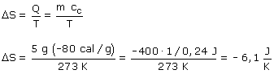
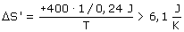

a) Durante la congelación la temperatura del agua permanece constante (273 K)  La entropía del agua ha disminuído Las 400 calorías que pierde el agua al congelarse las toma el entorno que deberá estar a menos de 273 K (Si no fuera así no se congelaría el agua). La variación de entropía del entorno será:  La entropía del entorno ha aumentado más de lo que ha disminuído la entropia del agua. Total: la entropía del Universo ha aumentado |